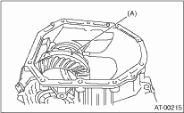
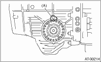
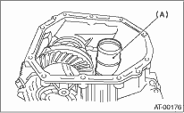

1. Install the differential assembly to the converter case.
NOTE:
Do not damage the inside of the converter case (especially the mating surface of the differential side retainer).

|
(A) |
Differential ASSY |
2. Install the O-ring to the left and right side differential side retainer.
3. Using the ST, install the side retainer. 
| ST 499787000 | WRENCH ASSY |
4. Adjust the backlash of the front differential.
5. Install the lock plate.
Tightening torque:
25 N·m (2.5 kgf-m, 18.1 ft-lb)

|
(A) |
Lock plate |
6. Install new seal pipe to converter case.

|
(A) |
Seal pipe |
7. Install the converter case to the transmission case.
8. Insert the inhibitor switch and transmission connector to the stay.

|
(A) |
Transmission harness ASSY |
|
(B) |
Inhibitor switch harness |
9. Install the ATF cooler pipe.
10. Install the oil charge pipe together with an O-ring.
11. Insert the input shaft while rotating it lightly by hand, and then check the amount of protrusion.
Normal protrusion A:
50 — 55 mm (1.97 — 2.17 in)

12. Install the torque converter clutch assembly.
13. Install the transmission assembly to the vehicle.